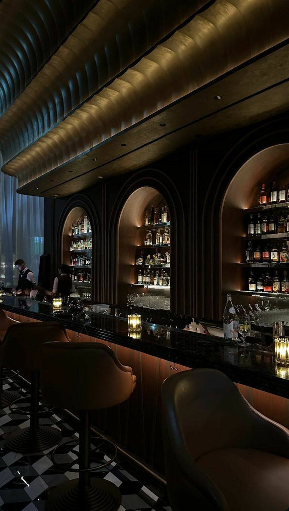

Крепкие напитки
Стили, регионы, подача, температура и логика выбора — чтобы крепкий напиток не был слепым жестом.
Cellar & taste
Этот раздел о том, как разбираться в вине, крепких напитках и коктейлях без суеты и показной осведомленности — так, чтобы чувствовать себя естественно за столом любого уровня.

Стили, регионы, подача, температура и логика выбора — чтобы крепкий напиток не был слепым жестом.
Как не теряться в карте, как выбирать под стол и как различать базовые вещи спокойно и уверенно.
Классическая коктейльная культура, ключевые рецептуры, барный этикет и заказ без дилетантской случайности.